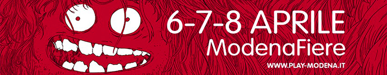
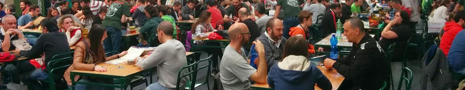

Quando si parla di Modena a qualcuno viene subito in mente il celebre aceto, ma siamo sicuri che alle orecchie di un giocatore navigato catterebbe rapidamente l’associazione con la parola “Play”. Alla sua decima edizione, la manifestazione si è conquistata uno spazio speciale sul calendario degli appassionati del gioco e quest’anno potrà essere apprezzata per un giorno in più. Da venerdì 6 a domenica 8 aprile, l’area fieristica ospiterà una miriade di eventi, ospiti e attività.
Noi ci saremo, e già da adesso vogliamo condividere con voi quanto abbiamo imparato in diversi anni di frequentazione.

L’evento è incentrato maggiormente sul gioco da tavolo, pertanto aspettatevi di trovare molti giochi e molti tavoli.
Case editrici più o meno importanti saranno presenti con i propri stand e coglieranno l’occasione per presentare e far provare le ultimissime novità. Una buona idea allora è quella di fiondarsi sui tavoli che si trovano liberi, provando tutto quello che capita. Così facendo,oltre a dare un po’ di sollievo alle gambe, potreste scovare dei gioiellini che altrimenti vi sareste persi.
Se avete invece puntato ad un titolo particolare, armatevi di pazienza e aspettate il vostro turno al tavolo. Se la politica dello stand lo prevede, è possibile prenotarsi per la successiva dimostrazione, sfruttando il tempo di attesa per altro… nel qual caso siate puntuali o potreste perdere il posto!
Qualora preferiste un clima più rilassato, potrete rivolgervi alla ludoteca della Tana dei Goblin, che grazie ai volontari delle sue associazioni, vi permetterà di provare qualcuno fra gli oltre 500 titoli a loro disposizione. Trovate un tavolo libero, sedetevi, mandate qualcuno armato di carta d’identità al bancone e lasciatela lì in ostaggio in cambio di un gioco e di uno spiegatore in carne e ossa.
Non mancheranno appuntamenti con gli autori. Ci saranno momenti per gli autografi, conferenze, presentazioni degli ultimi titoli ideati e in alcuni casi sarà anche possibile sedersi al tavolo per giocare direttamente con loro. Oltre ai nomi consolidati, ci sarà spazio per i prototipi degli autori esordienti… dategli una possibilità perché fra di loro potrebbe nascondersi un nuovo Stefan Feld!

Che fiera ludica sarebbe se non ci fosse la possibilità di fare shopping? Ogni editore avrà chiaramente il proprio stand, ma potrete trovare anche molti altri negozi di settore. I prezzi sono solitamente pari a quelli del mercato, anche se alle volte si possono trovare offerte interessanti come ad esempio 3x2, sconti progressivi per numero di prodotti, zone outlet, giochi usati o con la scatola danneggiata o ancora, la possibilità di trovare giochi rari e fuori produzione.In ogni caso, se programmate di fare grossi acquisti non verrete guardati male se vi porterete borsoni o trolley… non manca nemmeno chi gira con carrelli portapacchi! Segnaliamo infine che da alcuni anni è nata l’iniziativa dell’ora S, alcuni momenti della giornata in cui chi vuole può ritrovarsi in un punto prestabilito della fiera per scambiare i propri titoli in un clima da mini bazar improvvisato. Sempre di scambi si parla con “math trade”, un sistema gestito attraverso la piattaforma di Boardgamegeek, attraverso il quale si inseriscono in un “pentolone matematico” i giochi che si vogliono scambiare e quelli che si vorrebbero ricevere in cambio. L’algoritmo, una volta incrociati i dati di tutti gli utenti, restituisce i risultati che porteranno a un super scambio multiplo.
Il piano superiore ospita alcune sale e spazi molto più ristretti rispetto ai padiglioni sottostanti, ma allo stesso tempo anche molto più tranquilli e adatti ad ospitare le attività più di nicchia.
Siete appassionati di un particolare gioco e volete partecipare ad una sfida competitiva? Spulciate il sito del “Modena Play”, perché potrebb esserci un torneo adatto a voi. A onor del vero di tornei ne potrete trovare anche nei padiglioni, ma quelli in balconata sono sempre quelli con maggiore affluenza... “Bang!”, “7 Wonders”, “Agricola”, giusto per citarne alcuni.
Al primo piano si terranno inoltre diverse conferenze di settore. Anche in questo caso vi indirizziamo al sito dell’evento per un elenco completo.

Ma “Modena Play” non è solo boardgames… Consolidata è la partecipazione di numerosi cosplayer, che durante l’evento avranno a disposizione uno spazio dedicato per le fotografie, con luci e fondali, oltre a poter partecipare al consueto contest.
Nel 2008 in Giappone sono nate le prime Escape Room, un fenomeno che si è diffuso rapidamente nel corso degli ultimi dieci anni. Chiusi all’interno di una stanza, dovrete trovare la soluzione agli enigmi che vi permetteranno di fuggire. Preparate il vostro gruppo, perché alla fiera avrete più di un’occasione per mettervi alla prova.
Fra le esigenze di un giocatore ci sono la sfida e il divertimento… ma anche riempire la pancia non è male. Nel corridoio centrale e in alcuni spazi adibiti dei padiglioni troverete degli stand dove acquistare dei pasti veloci. Se volete evitare code infinite, il nostro consiglio è di evitare le ore di punta o di portarvi cibarie da casa.
Come per la precedente edizione della fiera, Ludimus festeggerà il suo compleanno organizzando un pullman per scendere da Trento a Modena nella giornata di sabato 7.
Volete unirvi a noi e approfittare della nostra compagnia?
Tutte le informazioni le potete trovare sul nostro evento Facebook!